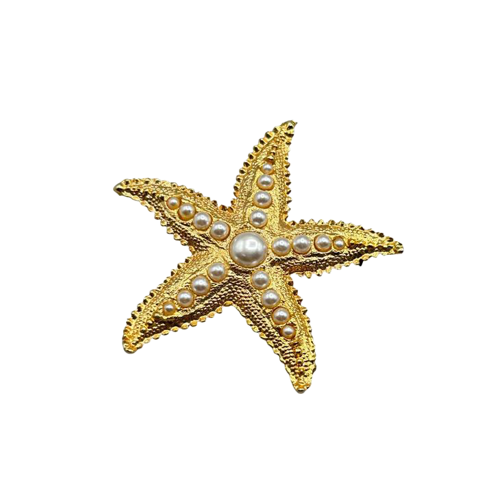
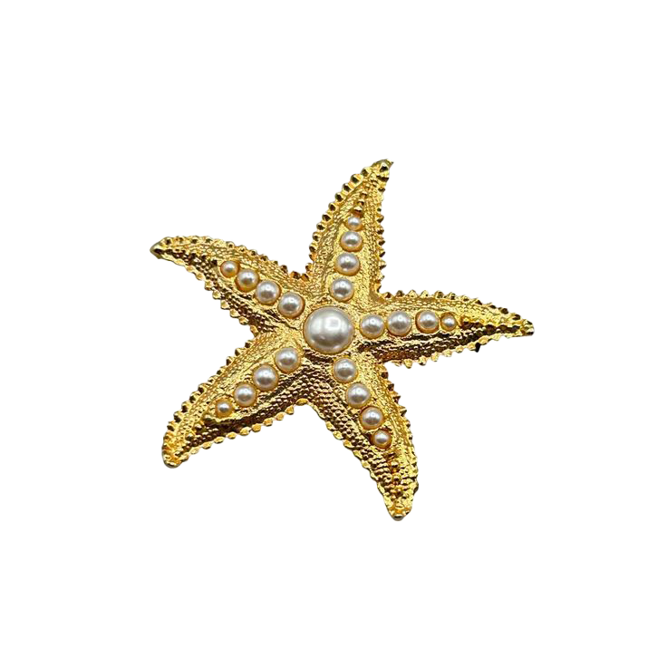

"A small decorative object, or a piece of jewelry that is cheap or of low quality: She always returns from vacation with a few souvenirs, mostly just cheap trinkets. Synonym. bauble."
 
Where to find trinkets in RVA

Where to find trinkets in RVA